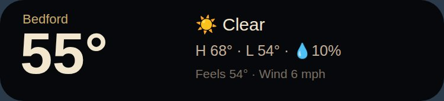
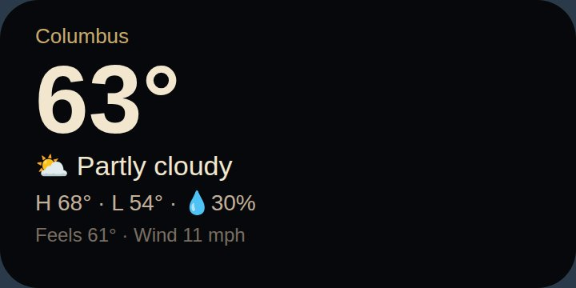
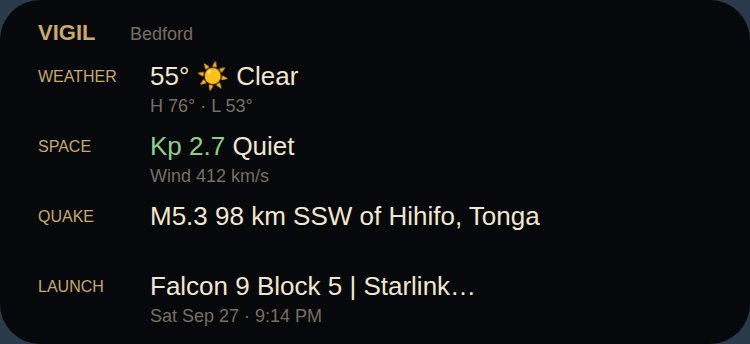
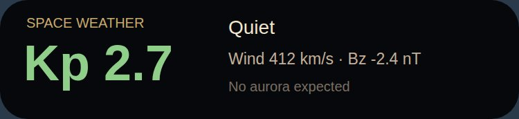
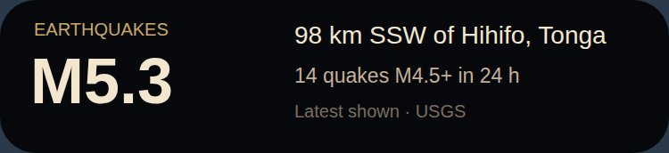
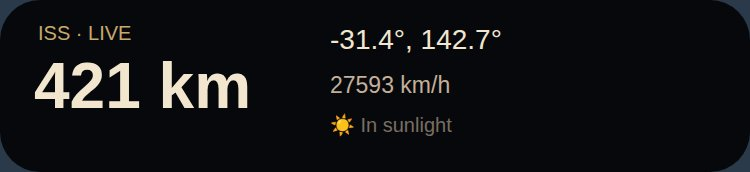
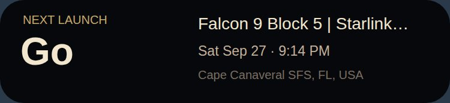
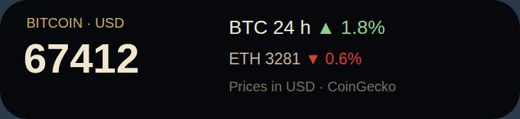

Weather · Wide4×1
Temperature, conditions, high/low, rain chance, feels-like and wind for where you are. One row — fits a 4×1 slot.
Download .kwgtandroid · kwgt · free
Vigil, one glance at a time. Each widget pulls the same public feeds the full board uses — Open-Meteo, NOAA SWPC, USGS, The Space Devs, CoinGecko — straight to your home screen. No account, no tracking; your location never leaves the phone except to ask for the forecast.

Temperature, conditions, high/low, rain chance, feels-like and wind for where you are. One row — fits a 4×1 slot.
Download .kwgt

The board in one card: local weather, space weather, the latest quake and the next launch.
Download .kwgt
Kp index coloured by severity, storm level, solar wind speed and Bz, and an aurora outlook.
Download .kwgt
The latest M4.5+ earthquake anywhere and how many there have been in the last 24 hours.
Download .kwgt
Where the space station is right now — position, altitude, speed, and whether it's in sunlight.
Download .kwgt

Kustom/widgets folder.https://mentifaber.com/vigil.html (or /wx/ for weather) so a tap opens the full view.If a card is cut off or leaves a gap, resize the widget one cell, or open the editor and adjust the Card's width. Launch data is rate-limited by its provider, so that widget refreshes at most a few times an hour.